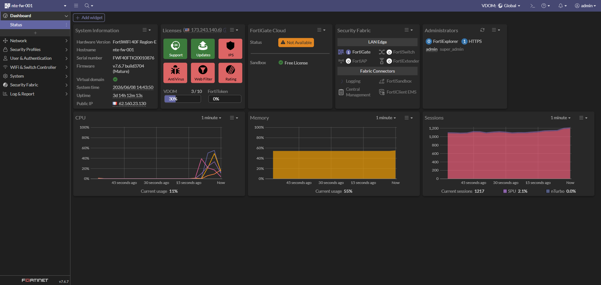
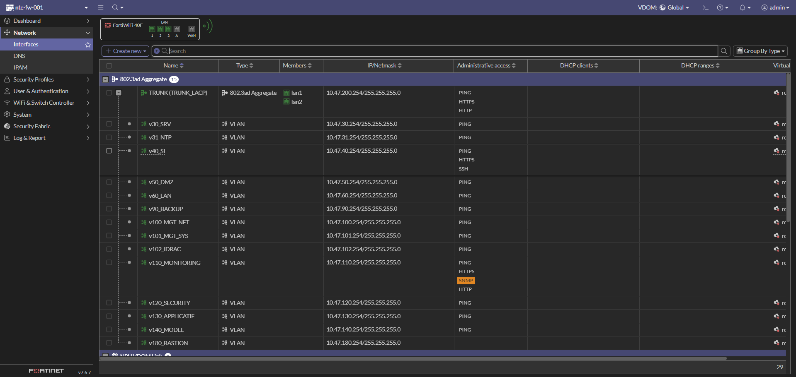
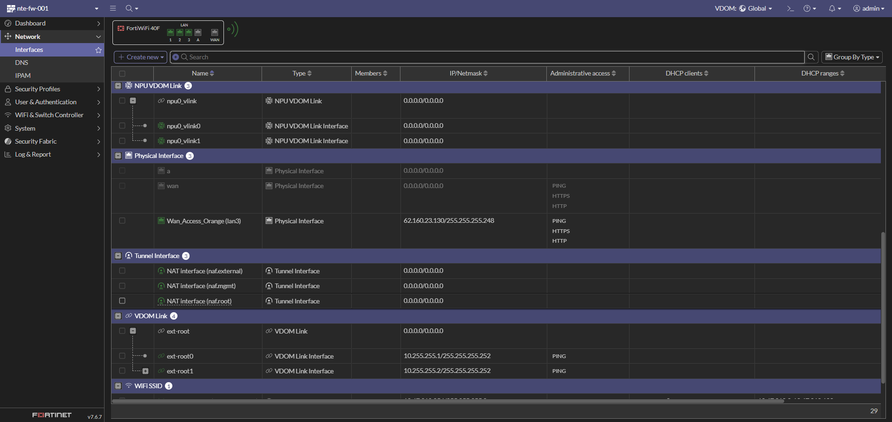
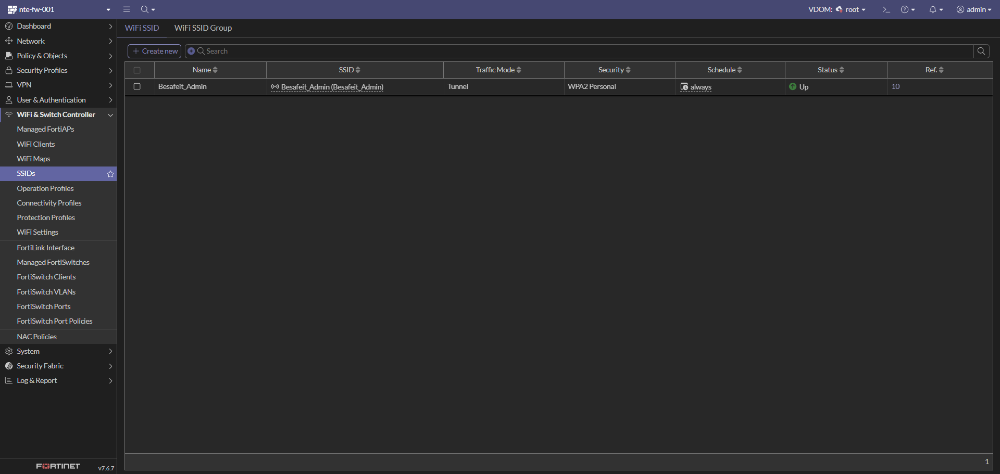
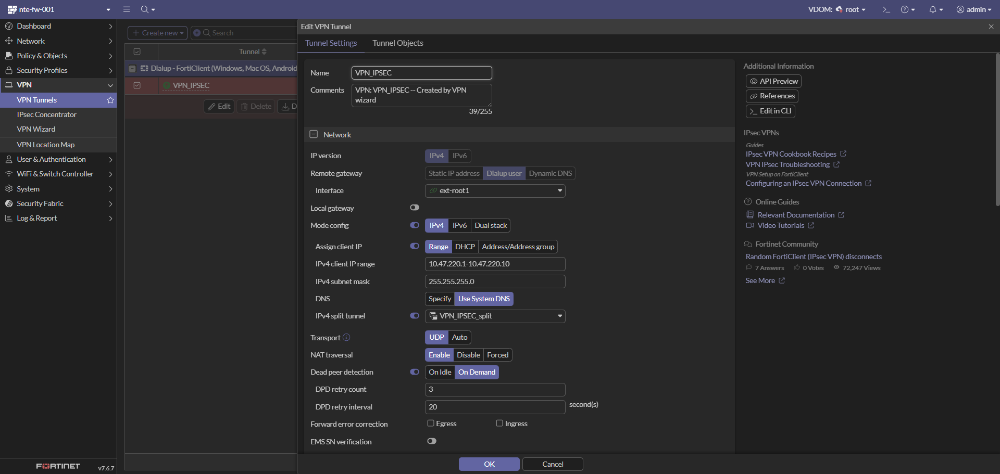
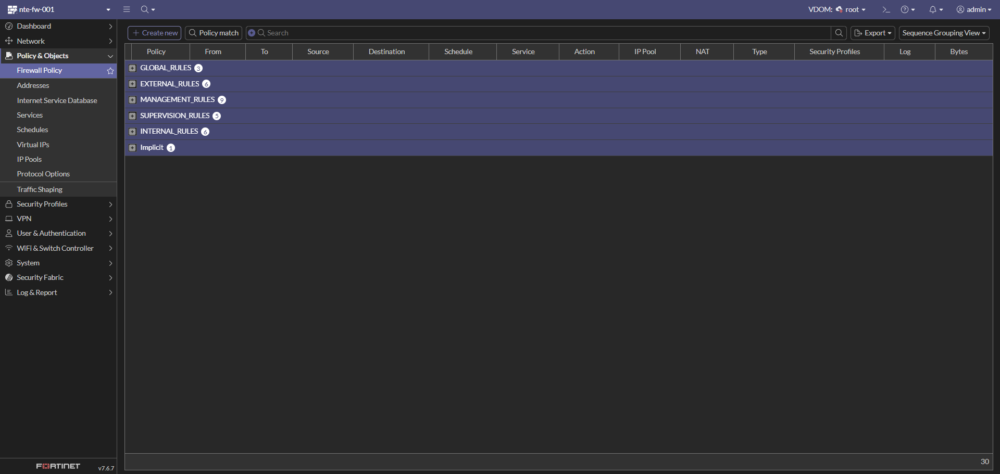
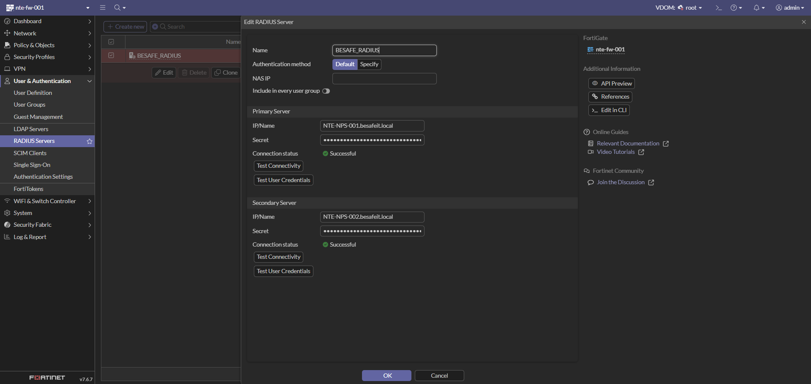

🛡️ Configuration du pare-feu Fortinet FortiWiFi 40F
Cette page documente la configuration complète du pare-feu FortiWiFi 40F (
nte-fw-001) utilisé dans l’infrastructure BESAFE. Il assure le routage inter-VLAN, le filtrage, le NAT, le VPN et le point d’accès Wi-Fi d’administration, le tout en architecture multi-VDOM.
⚙️ Détails techniques
| Élément | Valeur |
|---|---|
| Modèle | FortiWiFi 40F (Region-E) |
| Hostname | nte-fw-001 |
| Numéro de série | FWF40FTK20010876 |
| Firmware | v7.6.7 build3704 (Mature) |
| Rôle | Pare-feu, routage inter-VLAN, NAT, VPN, Wi-Fi |
| VDOM | Multi-VDOM activé (Global / root) — 3 / 10 |
| IP publique (WAN) | 62.160.23.130 |
| Méthode d’administration | HTTPS / SSH |
📸 Capture 1 – Tableau de bord (Status)

Vue d’ensemble de l’état du boîtier :
- System time : 2026/06/08 — Uptime : 3j 14h
- CPU : ~11 % · Mémoire : ~55 % · Sessions : ~1200
- Licences : Support / Updates actifs, FortiGate Cloud non utilisé
- Security Fabric : FortiGate racine, connecteurs disponibles (Logging, FortiSandbox, etc.)
🌐 Étape 1 : Configuration réseau
Objectif : définir les interfaces physiques, l’agrégat LACP et les VLANs associés afin d’assurer le routage entre les réseaux internes et la connectivité Internet.
📸 Capture 2 – Interfaces & VLANs (agrégat LACP)

Le LAN interne repose sur un agrégat 802.3ad (LACP) nommé TRUNK (TRUNK_LACP), composé des ports physiques lan1 et lan2. Tous les VLANs internes sont tagués sur ce trunk.
| Interface | Type | Réseau / IP FW (.254) | Accès admin |
|---|---|---|---|
| TRUNK (TRUNK_LACP) | 802.3ad Aggregate (lan1 + lan2) | 10.47.200.254/24 | PING, HTTPS, HTTP |
VLANs transportés par le trunk :
| VLAN | Interface | Réseau | IP FW (.254) | Accès admin | Description |
|---|---|---|---|---|---|
| 30 | v30_SRV |
10.47.30.0/24 | 10.47.30.254 | PING | Serveurs AD / DNS / DHCP |
| 31 | v31_NTP |
10.47.31.0/24 | 10.47.31.254 | PING | Serveurs de temps (NTP) |
| 40 | v40_SI |
10.47.40.0/24 | 10.47.40.254 | PING, HTTPS, SSH | Admin / SI interne |
| 50 | v50_DMZ |
10.47.50.0/24 | 10.47.50.254 | PING | Réseau exposé (DMZ) |
| 60 | v60_LAN |
10.47.60.0/24 | 10.47.60.254 | PING | Utilisateurs internes |
| 90 | v90_BACKUP |
10.47.90.0/24 | 10.47.90.254 | PING | Sauvegarde (Veeam / NAS) |
| 100 | v100_MGT_NET |
10.47.100.0/24 | 10.47.100.254 | PING | Mgmt Switch / réseau |
| 101 | v101_MGT_SYS |
10.47.101.0/24 | 10.47.101.254 | PING | Mgmt ESXi / VCSA |
| 102 | v102_IDRAC |
10.47.102.0/24 | 10.47.102.254 | PING | Accès iDRAC serveurs |
| 110 | v110_MONITORING |
10.47.110.0/24 | 10.47.110.254 | PING, HTTPS, SNMP, HTTP | Supervision (Zabbix / Grafana) |
| 120 | v120_SECURITY |
10.47.120.0/24 | 10.47.120.254 | PING | Wazuh / IDS / SOC |
| 130 | v130_APPLICATIF |
10.47.130.0/24 | 10.47.130.254 | PING | GLPI / Nextcloud / Vault |
| 140 | v140_MODEL |
10.47.140.0/24 | 10.47.140.254 | PING | Réseau de gabarit / template |
| 180 | v180_BASTION |
10.47.180.0/24 | 10.47.180.254 | PING | Bastion d’administration |
💡 L’accès administratif (HTTPS / SSH) n’est ouvert que sur les VLANs nécessaires (
v40_SI,v110_MONITORING, trunk). Le reste est limité au PING pour le diagnostic.
📸 Capture 3 – Interfaces WAN & liens VDOM

| Interface | Type | Réseau / IP | Accès admin | Description |
|---|---|---|---|---|
wan |
Physical Interface | (DHCP) | PING, HTTPS, HTTP | Interface WAN |
Wan_Access_Orange (lan3) |
Physical Interface | 62.160.23.130/29 | PING, HTTPS, HTTP | Accès Internet (Orange) |
ext-root0 |
VDOM Link Interface | 10.255.255.1/30 | PING | Lien inter-VDOM côté root |
ext-root1 |
VDOM Link Interface | 10.255.255.2/30 | PING | Lien inter-VDOM (utilisé par le VPN) |
npu0_vlink0/1 |
NPU VDOM Link | — | — | Lien matériel NPU entre VDOM |
🧱 L’architecture multi-VDOM sépare la partie « accès / WAN » (
Global) de la partie « production » (root). Le trafic transite via les liens ext-root (10.255.255.0/30).
⚙️ Bonnes pratiques
- 🔒 Limiter l’accès administratif (HTTPS/SSH) aux seuls VLANs d’administration.
- 🧱 Créer des objets / zones par VLAN pour simplifier les règles (
Zone_v30_SRV, etc.). - 🕒 Activer la synchro NTP (VLAN 31) pour des logs cohérents.
- 🔁 Vérifier l’état LACP du trunk (lan1 + lan2) côté switch.
📶 Étape 2 : Point d’accès Wi-Fi (FortiWiFi)
Objectif : exposer un SSID d’administration sécurisé via la radio intégrée du FortiWiFi 40F.
📸 Capture 4 – SSID configuré

| Paramètre | Valeur |
|---|---|
| Nom / SSID | Besafeit_Admin |
| Traffic Mode | Tunnel |
| Sécurité | WPA2 Personal |
| Schedule | always |
| Statut | 🟢 Up |
💡 Le SSID est diffusé en mode Tunnel : le trafic Wi-Fi est remonté jusqu’au FortiGate avant d’être filtré par la politique, ce qui permet de l’assigner à une zone (
Besafeit_Admin) dans les règles.
🔐 Étape 3 : VPN IPSec (Client-to-Site / Dialup)
Objectif : permettre l’accès distant sécurisé au réseau BESAFE via FortiClient (IPSec dialup), avec authentification sur annuaire et chiffrement moderne.
📸 Capture 5 – Paramètres réseau du tunnel

| Paramètre | Valeur |
|---|---|
| Nom | VPN_IPSEC |
| Type | Dialup user (Client-to-Site) |
| Interface | ext-root1 |
| Mode config | Activé (IPv4) |
| Plage IP clients | 10.47.220.1 – 10.47.220.10 |
| Masque | 255.255.255.0 |
| DNS | Use System DNS |
| Split tunnel | VPN_IPSEC_split |
| Transport | UDP |
| NAT traversal | Enable |
| Dead Peer Detection | On Demand (retry 3 / 20 s) |
| Paramètre | Valeur |
| :-- | :-- |
| Méthode | Pre-shared Key |
| IKE | Version 2 |
| EAP | Activé (EAP identity request) |
| User group | Ipsec_Users |
| Accepted peer ID / Remote gateway | Any |
| Phase 1 : | |
| - Chiffrement / authentification : AES128-SHA256 et AES256-SHA256 | |
| - Groupes Diffie-Hellman : 20 et 21 | |
| - Key lifetime : 86400 s |
Phase 2 (sélecteurs) :
| Nom | Local Address | Remote Address |
|---|---|---|
VPN_IPSEC |
0.0.0.0/0.0.0.0 | 0.0.0.0/0.0.0.0 |
✅ Le tunnel
Dialup - FortiClientcomplète la configuration pour les clients Windows / macOS / Android.
🧱 Étape 4 : Politique de filtrage (Firewall Policy)
Objectif : organiser le filtrage par groupes de séquence (Sequence Grouping View) pour une lecture claire selon le rôle des flux.
📸 Capture 8 – Vue globale des groupes de règles

| Groupe | Nb de règles | Rôle |
|---|---|---|
GLOBAL_RULES |
3 | Règles transverses (PING, AD/LDAP/DNS, NTP) |
EXTERNAL_RULES |
6 | Flux sortants vers Internet (WAN) |
MANAGEMENT_RULES |
9 | Administration depuis le bastion / SI |
SUPERVISION_RULES |
5 | Supervision |
INTERNAL_RULES |
6 | Flux inter-VLAN applicatifs |
Implicit |
1 | Implicit Deny (refus par défaut) |
GLOBAL_RULES
| ID | Nom | Source → Destination | Service | Action |
|---|---|---|---|---|
| 30 | GLP-ALL-ALLOW-PING |
any → any | PING | ✅ ACCEPT |
| 10 | GLB-POL-ALL-DC-LDAP/DNS-ALLOW |
Zones internes → Zone_v30_SRV (GRP_DC) |
Windows AD | ✅ ACCEPT |
| 11 | GLB-POL-ALL-NTP-NTP-ALLOW |
Zones internes → Zone_v31_NTP (VIP-NTP) |
NTP | ✅ ACCEPT |
EXTERNAL_RULES (vers ext-root1 / Internet)
| ID | Nom | Service | Action |
|---|---|---|---|
| 32 | Accès Internet utilisateurs (LAN/SI/VPN) | Email Access, Web Access | ✅ ACCEPT |
| 40 | SRV-EXT-ALLOW-INTERNET |
Web, Email, Rustdesk (TCP/UDP) | ✅ ACCEPT |
| 33 | EXT-DMZ-ALLOW-HTTPS → NTE-NPM-001 |
HTTPS | ✅ ACCEPT |
| 13 | DC-EXT-ALLOW-NTP (GRP_DC) |
NTP | ✅ ACCEPT |
| 20 | NTP-EXT-ALLOW-NTP (GRP-NTP) |
NTP | ✅ ACCEPT |
Accès d’administration, principalement depuis le bastion (Zone_v180_BASTION), le SI (Zone_v40_SI) et la zone VPN, vers les comptes/objets sources NTE-BASTION-001, NTE-PAWT0-001 et VPN_IPSEC_range.
| ID | Nom | Destination | Service |
|---|---|---|---|
| 26 | INT-MGMT-BASTION-ALLOW-HTTPS |
NTE-BASTION-001 |
HTTPS |
| 21 | INT-MGMT-DEB-ALLOW-SSH |
GRP_LINUX |
Jump_SSH |
| 17 | INT-MGMT-DC-RDP-ALLOW-RDP |
GRP_Windows |
Jump_RDP |
| 9 | INT-MGMT-FORTI-HTTPS-ALLOW-WEB |
NTE-FW-001 |
Port_FW |
| 7 | INT-MGMT-IDRAC-HTTP-ALLOW-WEB |
GRP_IDRAC |
HTTPS, VNC |
| 8 | INT-MGMT-SW-SSH-ALLOW-SSH |
GRP_SW |
SSH |
| 12 | INT-MGMT-ESXI-HTTPS-ALLOW-WEB |
GRP_ESXI |
HTTPS, PORT_VCSA, SSH |
| 14 | INT-MGMT-NAS-RDP-ALLOW-RDP |
NTE-NAS-001 |
RDP |
| 31 | INT-MGMT-NPM-ALLOW-WEB |
NTE-NPM-001 |
Port_NPM |
Flux depuis Zone_v110_MONITORING (source NTE-SUP-001) vers les équipements supervisés.
| ID | Nom | Cible | Service | État |
|---|---|---|---|---|
| 27 | SUP_TO_OTHER_ALLOW_SNMP |
GRP_LINUX, GRP_SNMP_SUP |
SNMP | |
| 41 | SUP_TO_ESXi_ALLOW_HTTPS |
GRP_ESXI |
HTTPS, Daemon_VCSA | |
| 28 | SUP_TO_OTHER_ALLOW_WinRM |
GRP_Windows |
WinRM | |
| 29 | SUP_TO_OTHER_ALLOW_SSH |
GRP_LINUX |
SSH | |
| 35 | SUP_TO_FW_ALLOW_HTTPS |
NTE-FW-001 |
Port_FW |
Flux applicatifs inter-VLAN.
| ID | Nom | Flux | Service | État |
|---|---|---|---|---|
| 24 | SW_TO_NPS_ALLOW_RADIUS |
Zone_v100_MGT_NET → Zone_v30_SRV (GRP_NPS) |
RADIUS | |
| 34 | DMZ-TO-APPLICATIF-ALLOW-HTTP |
Zone_v50_DMZ → Zone_v130_APPLICATIF |
Port_Vault, Port_Wiki, Port_Cloud | |
| 37 | LAN-TO-APPLICATIF-ALLOW-WEB |
LAN/SI/VPN → Zone_v130_APPLICATIF |
HTTP, HTTPS | |
| 25 | SRV-TO-SECURITY-ALLOW-WAZUH |
Zones → Zone_v120_SECURITY (NTE-WAZUH-001) |
Port_Wazuh | |
| 38 | BACKUP_TO_NAS_ISCSI |
Zone_v90_BACKUP → Zone_v101_MGT_SYS (NTE-NAS-001) |
iSCSI | |
| 36 | BACKUP_TO_ESXi_ALLOW_WEB_&_NFC |
Zone_v90_BACKUP → Zone_v101_MGT_SYS (GRP_ESXI) |
HTTPS, NFC | |
| — | Implicit Deny (0) |
any → any | ALL | 🚫 DENY |
💡 Tout flux non explicitement autorisé tombe dans le Implicit Deny (refus par défaut).
🛂 Étape 5 : Authentification (RADIUS / NPS)
Objectif : centraliser l’authentification (VPN, accès) sur les serveurs NPS de BESAFE via RADIUS, en haute disponibilité.
📸 Capture 13 – Serveur RADIUS

| Paramètre | Valeur | Commentaire |
|---|---|---|
| Nom | BESAFE_RADIUS |
Connecteur RADIUS |
| Méthode d’auth. | Default | — |
| Serveur principal | NTE-NPS-001.besafeit.local |
🟢 Connexion réussie |
| Serveur secondaire | NTE-NPS-002.besafeit.local |
🟢 Connexion réussie (HA) |
🔒 Notes de sécurité BESAFE : - Les secrets RADIUS ne doivent jamais apparaître en clair dans la documentation. - Le double serveur NPS assure la haute disponibilité de l’authentification. - Le groupe
Ipsec_Usersest utilisé pour autoriser l’accès VPN via cette authentification.
✅ Résumé global
| Étape | Élément | Description | État |
|---|---|---|---|
| 1️⃣ | Réseau | Trunk LACP + VLANs + WAN (multi-VDOM) | ✅ |
| 2️⃣ | Wi-Fi | SSID Besafeit_Admin (WPA2, Tunnel) |
✅ |
| 3️⃣ | VPN IPSec | Dialup FortiClient, IKEv2, EAP | ✅ |
| 4️⃣ | Filtrage | 6 groupes de règles (certains désactivés) | ⚠️ |
| 5️⃣ | Authentification | RADIUS NPS (HA) | ✅ |